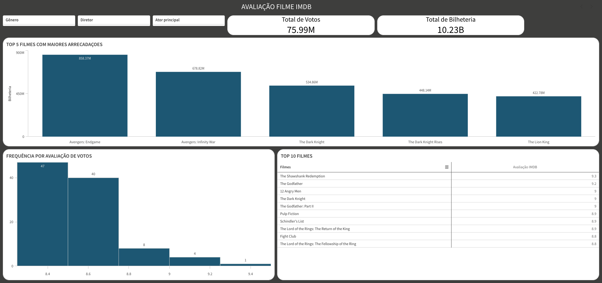
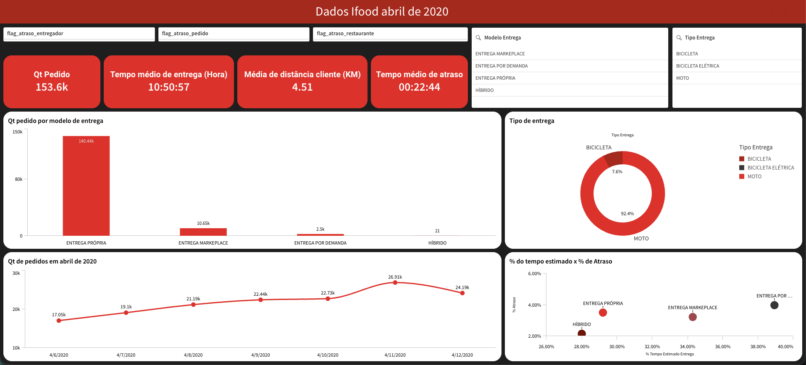

Nome do Projeto
Descrição breve do que o dashboard analisa.
000
Métrica 1
000
Métrica 2
Transformo dados complexos em dashboards interativos que ajudam empresas a enxergar com clareza e agir com confiança.
Sou analista de dados com foco em Business Intelligence e visualização. Especialista em Qlik Sense, desenvolvo dashboards que transformam dados brutos em insights claros e acionáveis.
Tenho experiência em análise de dados de diferentes setores — de entretenimento a logística — sempre com o objetivo de ajudar gestores a enxergar o que os números realmente dizem.
Acredito que um bom dashboard não é só bonito — ele precisa contar uma história e guiar decisões.

Adicione images/imdb.png
Adicione images/ifood.pngTem um projeto de dados em mente? Me chama — transformo os dados da sua empresa em insights visuais e acionáveis.
Enviar mensagem